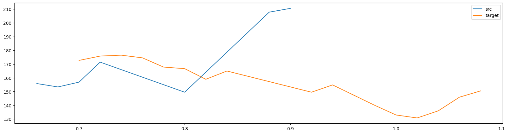

Tutorial: morphing¶
While CLEESE is primarily designed to randomize stimuli by transforming a base stimulus with randomly generated 'filters', its underlying transformation engines can be used to create 'morphings' between 2 predefined stimuli. This tutorial shows how to use CLEESE's PhaseVocoder engine to create sounds that have parametrically intermediate pitch, intensity and duration contours between a source and a target sound.
In more details, the procedure involves, first, estimating the pitch, rms or duration contour of both source and target sounds (using e.g. times,pitch = PhaseVocoder.extract_pitch(wave,sr) ), creating intermediate contours by e.g. interpolating linearly between the source and target values at every time point, and applying this contour as a bpf to the source sound. This is not unlike the procedure to flatten files (where we first measure the original pitch contour, create a bpf that compensates that contour, and apply it again) described here).
Preambule¶
Verify your installation¶
Before starting, please verify that you have a working CLEESE installation, by running the following cell which should return without error.
Check the installation instructions if needed.Useful imports¶
The following code imports all the python packages that are needed in the rest of this tutorial (which you can pip install if you don't have them already).
Useful files¶
In the following, we'll be a number of files which you'll first need to download and store in your path at the indicated place
- apri_Q
./sounds/apri_Q: the recording of a word pronounced as a question - apri_I
./sounds/apri_I: another recording of the same word, this time pronounced as a statement
Note
Both sounds were kindly provided by Dr. James Trujillo (University of Amsterdam), who also provided the use case of this tutorial
- random_pitch_profile.toml
./configs/random_pitch_profile.toml: a configuration file used to manipulate pitch - random_speed_profile.toml
./configs/random_speed_profile.toml: a configuration file used to manipulate speed/duration - random_rms_profile.toml
./configs/random_rms_profile.toml: a configuration file used to manipulate intensity/rms
Morphing duration contours¶
As a first step, we'll use the PhaseVocoder engine's ability to stretch sounds along arbitrary temporal contours in order to morph the duration of the two words.
Analyse source and target speed contours, and find the transformation needed to convert one into the other¶
First, let's load the two sounds using the PhaseVocoder.wav_read utility function. Arbitrarily, let's choose our source file (the one to be transformed) to be the question intonation, and our target file the statement/answer intonation.
src_wav, sr, frmt = PhaseVocoder.wav_read('./sounds/apri_Q.wav')
target_wav, sr, frmt = PhaseVocoder.wav_read('./sounds/apri_I.wav')
We then estimate the intensity profile of each sound, in order to visualize how they differ. The PhaseVocoder.extract_rms utility simply extracts root-mean-square intensity on every successive time window (duration win sec., here 20ms), and offers the possibility to threshold the resulting time series to only export values larger than a given intensity (put here to 0.02, but you may want to adapt this value manually to e.g. background noise).
src_times, src_rms = PhaseVocoder.extract_rms(src_wav, sr, win=.02, thresh=0.02, interpolate=False)
target_times, target_rms = PhaseVocoder.extract_rms(target_wav, sr, win=.02,thresh=0.02, interpolate=False)
plt.figure(figsize=(20,5))
plt.plot(src_times, src_rms, 'o-', label='src')
plt.plot(target_times, target_rms, 'o-',label='target')
plt.legend()

Our source/question word (blue)
has two distinct syllables (A/PRI), the first being a bit shorter, and the second a bit trailing. In comparison, the target/statement version of the same word (orange)
has a longer first syllable, and a shorter second. Similarly, the gap between the two question-syllables is a little shorter than between the two statement-syllables. Transforming the source into the target would therefore entail progressively stretching the first question-syllable, stretching the pause, and shortening the second segment, until the blue curve matches the morphology of the orange curve.
Note
Note the two words also differ by a lot more than syllable duration: from the graph above, we see that their intensity profiles differ notably on the first syllable (a louder syllable with a sharper onset for the target). Auditorily, it's also obvious that their pitch differs greatly, with an expected final pitch rise in the question/source file. In this section, we only transform duration, but below we will show how to also (or independently) transform intensity and pitch.
Note
Note also the two sounds don't start exactly at the same time in the file (the source sound as its onset around 600ms into the file; the target sound around 680ms), as often happens with naturalistic recordings. While this is not necessarily an issue, we'll also be using stretch to normalize that difference, while we're at it (see below)
Format this as a CLEESE bpf¶
To do all that we will create a BPF (breakpoint function) that lists what stretch factor to be applied at which time point in the file. First, we identify the temporal boundaries of the segments that we want to modify in each file: each syllable, as well as the gap between them.
# extract temporal bounds for the different segments
def extract_bounds(times, values):
'''
returns the start and end of every section composed of either consecutive nan or consecutive non-nans
'''
indices= [True]+ list(np.diff(np.isnan(values)))
indices[-1] = True
return list(times[indices])
src_bounds = extract_bounds(src_times, src_rms)
target_bounds = extract_bounds(target_times,target_rms)
plt.figure(figsize=(20,5))
plt.plot(src_times, src_rms, 'o-', label='src')
for bound in src_bounds:
plt.plot([bound,bound],[0,np.nanmax(src_rms)],'b:')
plt.plot(target_times, target_rms, 'o-',label='target')
for bound in target_bounds:
plt.plot([bound,bound],[0,np.nanmax(target_rms)],':r')
plt.legend()

Next, we define a bpf where the time points correspond to the boundaries of the segments, and the stretch at each of these segments corresponds to the ratio of duration between the corresponding segments in the source and target sound.
# add t=0 in the bounds, so we also compute the stretch necessary to align the onset of the two sounds
if src_bounds[0] > 0:
src_bounds = np.insert(src_bounds,0,0)
if target_bounds[0] > 0:
target_bounds = np.insert(target_bounds,0,0)
# the stretch transformation is acting at each time where RMS was detected in question_wav
stretch_bpf_times = src_bounds
# the target stretch at each of these ratio of duration between the corresponding segments in questions and statement bounds
stretch_bpf_val = [target/src for src, target in zip(np.diff(src_bounds),
np.diff(target_bounds))]
# display tentative bpf
stretch_bpf_val_temp = np.insert(stretch_bpf_val,0,stretch_bpf_val[0])
plt.step(stretch_bpf_times, stretch_bpf_val_temp, 'k-o', where='pre')
plt.xlabel('time in file')
plt.ylabel('BPF')
The resulting bpf, as should be, spreads around the 1:1 ratio (i.e. no change). It starts at 1.13, which corresponds to the stretching (>1) of the initial silence segment (in effect delaying the onset of the question to match the statement onset); then stretches both the first question syllable and the pause between syllables by what happens to be the same ratio (x1.33); and finally shortens the last question syllable by x.875 (i.e. 87% of its original duration).
Warning
The code above is brittle, as it assumes that there are the same number of segments in both source and target sounds. It is the case in this example (both start > 0, both have 3 segments: one syllable, one pause and one syllable), but this may well not be the case if you use other pairs of sounds. Adjust manually until you have the same number of segments, for instance by changing the extract_rms threshold (which, if set low enought will only output one segment per sound). It is also possible to manually set segment boundaries, e.g. by identifying them in audacity, and not use semi-automatic rms segmentation as we show here (see example here).
To apply this bpf, we simply call cleese.process_data on the source sound, passing it as the bpf=BPF argument, and using a configuration file that tells it it should apply the stretch transformation.
However, before we can do that, we need a little hack. Up until at least v2.3.2, CLEESE assumes a slightly different format for bpfs when they are passed directly with the bpf=BPF keyword, compared to when they are generated autonomously by the system. When generated by the system, bpfs can be made as square or ramp, depending on the BPFtype parameter in the config file. When custom bpfs are passed directly however, that parameter is ignored (issue 33), and whatever bpf values are passed are automatically interpolated linearly between time points, as if it was a ramp. So, even though stretch_config_file attempts to set BPFtype='square', that parameter is ignore, and we have to prepare our custom bpf before passing it to cleese.process_data so that its linear interpolation generates the square bpf that we eventually want the function to use.
# format bpf so it can be interpolated
transition_time = 0.01 #10ms
# need duration of source file in seconds
duration = (src_wav.shape[0])/sr
# insert t=0 at the beginning
stretch_bpf_times = np.insert(stretch_bpf_times, 0,0)
# every time point is replaced by one slightly earlier, and one slightly later, separated by transition_time
stretch_bpf_times = np.sort(np.concatenate((
np.array(stretch_bpf_times[1:-1])-transition_time/2,
np.array(stretch_bpf_times[1:-1])+transition_time/2)))
# check boundary conditions
if stretch_bpf_times[-1] > duration:
stretch_bpf_times = np.delete(stretch_bpf_times, -1)
if stretch_bpf_times[0] < 0:
stretch_bpf_times = np.delete(stretch_bpf_times, 0)
# add t=0 and t=duration
stretch_bpf_times = np.append(stretch_bpf_times, duration)
stretch_bpf_times = np.insert(stretch_bpf_times, 0, 0.)
# duplicate all bpf values too
stretch_bpf_val = np.repeat(stretch_bpf_val,2)
# display new bpf
plt.plot(stretch_bpf_times, stretch_bpf_val, 'k-o')
plt.xlabel('time in file')
plt.ylabel('BPF')

The resulting bpf has the same values as before, but is formatted in such a way that its linear interpolation looks like a square bpf (notice we use plt.plot and not plt.step here, compared to previous visualization).
Apply the bpf to the source file¶
Now we can finally apply the bpf to the file
# config file
stretch_config_file = "./configs/random_speed_profile.toml"
bpf = np.column_stack((stretch_bpf_times,stretch_bpf_val))
# transform sound
transf_wav,transf_bpf = cleese.process_data(PhaseVocoder, src_wav, stretch_config_file, sample_rate=sr, BPF=bpf)
# and save in sound file
PhaseVocoder.wav_write(transf_wav, './sounds/src_stretch.wav', sr, sample_format=frmt)
transf_times, transf_rms = PhaseVocoder.extract_rms(transf_wav, sr, win=.02, thresh=0.02, interpolate=False)
plt.figure(figsize=(20,5))
plt.plot(src_times, src_rms, 'o-', label='src')
plt.plot(target_times, target_rms, 'o-', label='target')
plt.plot(transf_times, transf_rms, 'o:',label='transf')
plt.legend()
The transformed sound (dotted, green) has the expected temporal morphology: it has been shifted in time and is now aligned with the target sound (orange); its first syllable and the pause between syllables have been stretched, and its second syllable has been shortened, all to match the duration of the target sound's. As already noted above, the stretch transformation has only shifted parts of sounds in time, but hasn't modified their intensity: the transformed first syllable is less intense that the target's, while the transformed second syllable is more intense than the target. Such adjustements of intensity will be done below.
The resulting sound
has the same rising-pitch intonation as the source sound, but a subtly different prosody from the original question
with a longer first syllable and a longer pause (/ap'pri/), making it sound perhaps a little more hesitating than the original.
One can compare its duration contour with the target sound, which has a markedly different pitch intonation:
Create successive morphings¶
If one want to make intermediate examples, one only has to modulate the stretch factor by multiplying it by a factor between 0 (0% transformation, identical to source) and 1 (100% transformation, similar to target). More precisely, because stretch factors are centered on 1:1, one should multiply its difference to 1, as 1 + factor*(stretch_bpf_val - 1)
For clarity, let's put everything above in a single function
def morph_stretch(src_wav,target_wav,sr,factor):
# extract source RMS
src_times, src_rms = PhaseVocoder.extract_rms(src_wav, sr, win=.02, thresh=0.02, interpolate=False)
# extract target RMS
target_times, target_rms = PhaseVocoder.extract_rms(target_wav, sr, win=.02,thresh=0.02, interpolate=False)
# extract segment boundaries
src_bounds = extract_bounds(src_times, src_rms)
target_bounds = extract_bounds(target_times,target_rms)
if src_bounds[0] > 0:
src_bounds = np.insert(src_bounds,0,0)
if target_bounds[0] > 0:
target_bounds = np.insert(target_bounds,0,0)
# compute bpf
stretch_bpf_times = src_bounds
stretch_bpf_val = [target/src for src, target in zip(np.diff(src_bounds),
np.diff(target_bounds))]
# reformat bpf for interpolation
src_duration = (src_wav.shape[0])/sr
stretch_bpf_times = np.sort(np.concatenate((
np.array(stretch_bpf_times[1:-1])-transition_time/2,
np.array(stretch_bpf_times[1:-1])+transition_time/2)))
# add t=0 and t=duration
stretch_bpf_times = np.append(stretch_bpf_times, src_duration)
stretch_bpf_times = np.insert(stretch_bpf_times, 0, 0.)
# duplicate all bpf values too
stretch_bpf_val = np.repeat(stretch_bpf_val,2)
# modulate the stretch factor by multiplying its difference to 1 by a factor between 0 and 1
factor_val = 1 + factor*(stretch_bpf_val - 1)
bpf = np.column_stack((stretch_bpf_times,factor_val))
# transform sound
stretch_config_file = "./configs/random_speed_profile.toml"
transf_wav,transf_bpf = cleese.process_data(PhaseVocoder, src_wav, stretch_config_file, sample_rate=sr, BPF=bpf)
return transf_wav
Then let's call morph_stretch with factors varying between 0 and 1, and plot/listen to the results.
plt.figure(figsize=(20,5))
src_times, src_rms = PhaseVocoder.extract_rms(src_wav, sr, win=.02, thresh=0.02, interpolate=False)
plt.plot(src_times, src_rms, 'o-', label='src')
target_times, target_rms = PhaseVocoder.extract_rms(target_wav, sr, win=.02,thresh=0.02, interpolate=False)
plt.plot(target_times, target_rms, 'o-', label='target')
factors = np.arange(0,1.1,0.1)
colors = plt.cm.jet(np.linspace(0,1,len(factors)))
for index,factor in enumerate(factors): # % of morphing, between 0% and 100%
transf_wav = morph_stretch(src_wav,target_wav,sr,factor)
# save file
PhaseVocoder.wav_write(transf_wav, 'src_stretch_%.1f.wav'%factor, sr, sample_format=frmt)
# visualize the rms contour of that transformation
transf_times, transf_rms = PhaseVocoder.extract_rms(transf_wav, sr, win=.02, thresh=0.02, interpolate=False)
plt.plot(transf_times, transf_rms, '-',label='transf_%.1f'%factor, alpha=0.3, color=colors[index])
plt.legend()
We see successive intermediate morphings between source and target behave as expected. Compare e.g. transformation at 0%
transformation at 50%
and transformation at 100%
Morphing pitch contours¶
To create intermediate pitch contours between a source and a target sound, we proceed similarly by, first, analysing the pitch contour of each sound, and then construct bpfs that convert one contour into the other.
We start again with the same two sounds:
src_wav, sr, frmt = PhaseVocoder.wav_read('./sounds/apri_Q.wav')
target_wav, sr, frmt = PhaseVocoder.wav_read('./sounds/apri_I.wav')
Analyse source and target pitch contour, and compute the transformation needed to convert one into the other¶
src_times, src_pitch = PhaseVocoder.extract_pitch(src_wav, sr, win=.02, bounds=[140,210], harmo_thresh=0.3, interpolate=True)
target_times, target_pitch = PhaseVocoder.extract_pitch(target_wav, sr, win=.02, bounds=[100,210], harmo_thresh=0.3, interpolate=True)
plt.figure(figsize=(20,5))
plt.plot(src_times, src_pitch, label='src')
plt.plot(target_times, target_pitch, label='target')
plt.legend()

As can clearly be heard, the source/question sound has a typical rising-pitch intonation, while the target has a descending pitch. Note that the target is higher than the source on the first syllable. So in order to convert one into the other, we will need to increase pitch in the first part of the sound, and lower it in the second part.
In order to write such a transformation as a bpf, we need to compare the pitch contour of the source to the pitch contour of the target, at every time point. Because both sounds are not aligned in time (they would be if we used the stretch morphing above first), and do not have the same duration, we can't directly compare them. First, we therefore resample the target pitch contour so that it has the same duration as the source.
plt.figure(figsize=(20,5))
plt.plot(src_times, src_pitch,'o-', label='src')
plt.plot(target_times, target_pitch, 'o-', label='target')
target_pitch_resampled = signal.resample(target_pitch, len(src_pitch))
plt.plot(src_times, target_pitch_resampled, 'o:', label='target_resampled')
plt.legend()
We then compute, at each time point in the source file, what is the needed pitch transformation to convert src_pitch into the resampled target_pitch. CLEESE's PhaseVocoder algorithm expects shift values in cents (i.e. 1% of a semitone), which can be obtained from a ratio of frequency (Hz) f_target/f_source as 1200*np.log2(f_target/f_source) (double-check: if f_target = 2 x f_source, we go up by one octave, which is 12 tones x 100 cents = 1200 cents, and 1200 x np.log2(2) is indeed +1200).
pitch_bpf_times = src_times
# the bpf_value is the cent transformation needed to convert question_pitch to target_pitch
def difference_to_cents(src_pitch_val, target_pitch_val):
return 1200*np.log2(target_pitch_val/src_pitch_val)
# the target pitch at each of these times is the corresponding pitch in resampled_target_pitch
pitch_bpf_val = np.array([difference_to_cents(src, target) for src, target in zip(src_pitch,target_pitch_resampled)])
# display original file
plt.plot(1000*pitch_bpf_times, pitch_bpf_val, 'k')
plt.xlabel('time in file (ms)')
plt.ylabel('BPF')
plt.plot([1000*np.min(pitch_bpf_times),1000*np.max(pitch_bpf_times)],[0,0],'k:')
The resulting bpf indeed increases pitch by about one musical tone (+200 cents) at the beginning of the sound, and lowers it dramatically (-700cents, which is down 3.5 musical tones, also called a 'fifth').
Warning
Transformations by more than a few semitones (e.g. +/- 300 cents) are usually considered large, and are notoriously difficult to do without altering the timbre/naturalness of the original sound. The PhaseVocoder algorithm currently implemented in CLEESE is a relatively vanilla variant of the classic Phase Vocoder algorithm, and while it includes a number of well-know improvements (e.g. phase-locking), it remains limited in its ability to achieve large shifts of the kind seen here at the end of the sound. The algorithm will do what asked, but the result is likely to be severely distorted (spoiler: indeed, we'll see below).
Reformat bpf¶
As above, this bpf cannot be directly passed to cleese.process and needs to be reformatted so that it can be linearly interpolated by the engine with changing its morphology. For this, we insert a segment between t=0 and the beginning of the source with a ratio of 0 cents (i.e. no transformation), and we insert a similar segment between the end of the source and t=duration.
# format bpf so it can be interpolated
transition_time = 0.05 #10ms
src_duration = (src_wav.shape[0])/sr
# insert pitch 0 between t=0 and t=pitch_bpf_times[0]-transition_time/2
pitch_bpf_times = np.insert(pitch_bpf_times,0,pitch_bpf_times[0]-transition_time/2)
pitch_bpf_val = np.insert(pitch_bpf_val,0,0)
pitch_bpf_times = np.insert(pitch_bpf_times,0,0)
pitch_bpf_val = np.insert(pitch_bpf_val,0,0)
# insert pitch 0 between t=pitch_bpf_times[-1]+transition_time/2 and t=duration
pitch_bpf_times = np.append(pitch_bpf_times,pitch_bpf_times[-1]+transition_time/2)
pitch_bpf_val = np.append(pitch_bpf_val,0)
pitch_bpf_times = np.append(pitch_bpf_times,duration)
pitch_bpf_val = np.append(pitch_bpf_val,0)
# display original file
plt.plot(1000*pitch_bpf_times, pitch_bpf_val, 'k')
plt.xlabel('time in file (ms)')
plt.ylabel('BPF')
plt.plot([1000*np.min(pitch_bpf_times),1000*np.max(pitch_bpf_times)],[0,0],'k:')
Apply bpf to source file¶
Finally, the bpf can be applied to the source file, using the random_pitch_profile.toml config file.
bpf = np.column_stack((pitch_bpf_times,pitch_bpf_val))
# apply transformation
pitch_config_file = "./configs/random_pitch_profile.toml"
transf_wav,transf_bpf = cleese.process_data(PhaseVocoder, src_wav, pitch_config_file, sample_rate=sr, BPF=bpf)
Create successive morphings¶
To create morphings, one need to modulate the bpf values with a morphing factor between 0 and 1. Contrary to stretch factors (that are multiplicative, hence centered on 1:1), pitch factors are additive and centered on 0, so modulating the bpf just amounts to multiplying its value, i.e. bpf = np.column_stack((pitch_bpf_times,factor*pitch_bpf_val))
As above, let's first gather all this code into a single morph_pitch function.
def morph_pitch(src_wav,target_wav,sr,factor):
# extract pitch
src_times, src_pitch = PhaseVocoder.extract_pitch(src_wav, sr, win=.02, bounds=[140,210], harmo_thresh=0.3, interpolate=True)
target_times, target_pitch = PhaseVocoder.extract_pitch(target_wav, sr, win=.02, bounds=[100,210], harmo_thresh=0.3, interpolate=True)
# resample to adapt to src time point
target_pitch_resampled = signal.resample(target_pitch, len(src_pitch))
# compute bpf
pitch_bpf_times = src_times
def difference_to_cents(src_pitch_val, target_pitch_val):
return 1200*np.log2(target_pitch_val/src_pitch_val)
pitch_bpf_val = np.array([difference_to_cents(src, target) for src, target in zip(src_pitch,target_pitch_resampled)])
# reformat bpf for interpolation
src_duration = (src_wav.shape[0])/sr
transition_time = 0.05 #10ms
# insert pitch 0 between t=0 and t=pitch_bpf_times[0]-transition_time/2
pitch_bpf_times = np.insert(pitch_bpf_times,0,pitch_bpf_times[0]-transition_time/2)
pitch_bpf_val = np.insert(pitch_bpf_val,0,0)
pitch_bpf_times = np.insert(pitch_bpf_times,0,0)
pitch_bpf_val = np.insert(pitch_bpf_val,0,0)
# insert pitch 0 between t=pitch_bpf_times[-1]+transition_time/2 and t=duration
pitch_bpf_times = np.append(pitch_bpf_times,pitch_bpf_times[-1]+transition_time/2)
pitch_bpf_val = np.append(pitch_bpf_val,0)
pitch_bpf_times = np.append(pitch_bpf_times,src_duration)
pitch_bpf_val = np.append(pitch_bpf_val,0)
# modulate the pitch factor by multiplying it by a factor between 0 and 1
bpf = np.column_stack((pitch_bpf_times,factor*pitch_bpf_val))
# apply transformation
pitch_config_file = "docs/docs/tutorials/configs/random_pitch_profile.toml"
transf_wav,transf_bpf = cleese.process_data(PhaseVocoder, src_wav, pitch_config_file, sample_rate=sr, BPF=bpf)
return transf_wav,transf_bpf
and we now call it for all factors between 0 and 1
plt.figure(figsize=(20,5))
plt.plot(src_times, src_pitch, 'o-', label='src')
plt.plot(src_times, target_pitch_resampled, 'o-', label='target')
factors = np.arange(0,1.1,0.1)
colors = plt.cm.jet(np.linspace(0,1,len(factors)))
for index,factor in enumerate(factors): # % of morphing, between 0% and 100%
# apply transformation
transf_wav, transf_bpf = morph_pitch(src_wav,target_wav,sr,factor)
# save file
PhaseVocoder.wav_write(transf_wav, 'src_pitch_%.1f.wav'%factor, sr, sample_format=frmt)
# visualize the pitch contour of that transformation
transf_times, transf_pitch = PhaseVocoder.extract_pitch(transf_wav, sr, win=.02, bounds=[140,210], harmo_thresh=0.3, interpolate=True)
plt.plot(transf_times, transf_pitch, '-',label='transf_%.1f'%factor, alpha=0.3,color=colors[index])
plt.legend()
As seen here, going from the source/question (blue) to the target/statement (orange) creates intermediate pitch contours that more or less interpolates between the two extremes.
Note
You may wonder why the interpolation seen in the above picture is not perfect, while it was yet created mathematically by an exact multiplication of the value. That's because what we're seeing here is not the bpf, but an algorithmic evaluation (extract_pitch) of the pitch of the resulting sound. While the bpf is exactly interpolated, the pitch transformation algorithm may not perfectly recreate the target pitch (we'll see below that it is the case for large transformations) and the pitch analysis algorithm may not perfectly recognize the pitch in the transformed sound (that's notably likely when sounds are distorted by the transformation).
Here's an audio montage of the successive intermediate pitch morphings between source and target obtained with this procedure
One can hear that the initial 3 or 4 steps are relatively useable, but that larger pitch transformations above step 5 or so severely distorts the timbre of the sound, making e.g. the second part of sound increasingly deep and masculine, to the point of sounding completely irrealistic. This illustrates the limitation of the relatively simple PhaseVocoder implementation in CLEESE, which is only really useful for small pitch transformations in the +/-300 cent range.
One possibility to circumvent this limitation is, of course, to generate morphings in the opposite direction (from target to source), and "meet in the middle".
plt.figure(figsize=(20,5))
plt.plot(target_times, target_pitch, 'o-', label='src')
src_pitch_resampled = signal.resample(src_pitch, len(target_pitch))
plt.plot(target_times, src_pitch_resampled, 'o-', label='target')
factors = np.arange(0,1.1,0.1)
colors = plt.cm.jet(np.linspace(0,1,len(factors)))
for index,factor in enumerate(factors): # % of morphing, between 0% and 100%
# apply transformation
transf_wav, transf_bpf = morph_pitch(target_wav,src_wav,sr,factor)
# save file
PhaseVocoder.wav_write(transf_wav, 'target_pitch_%.1f.wav'%factor, sr, sample_format=frmt)
# visualize the pitch contour of that transformation
transf_times, transf_pitch = PhaseVocoder.extract_pitch(transf_wav, sr, win=.02, bounds=[140,210], harmo_thresh=0.3, interpolate=True)
plt.plot(transf_times, transf_pitch, '-',label='transf_%.1f'%factor, alpha=0.3,color=colors[index])
plt.legend()

As before, the transformation from statement to question is relatively useable for the first 3-4 steps, after which the voice takes on an unnatural "chipmunk" quality.
Combining the two (first few steps of target to source, followed by first few steps of source to target in reverse order) creates a relatively convincing interpolation of pitch contours (although one of course can clearly hear the bifurcation of speed contour halfway in the sequence - for this we need to combine stretch and pitch morphing as seen below).
Morphing RMS¶
Morphing the rms contours between 2 sounds works in the same manner as above. We simply provide here the combined function.
def morph_rms(src_wav,target_wav,sr,factor):
# extract rms with no threshold
src_times, src_rms = PhaseVocoder.extract_rms(src_wav, sr, win=.02, thresh=0, interpolate=False)
target_times, target_rms = PhaseVocoder.extract_rms(target_wav, sr, win=.02,thresh=0, interpolate=False)
# resample to align time
target_rms_resampled = signal.resample(target_rms, len(src_rms))
target_rms_resampled = np.where(target_rms_resampled<0, 0, target_rms_resampled)
# compute bpf
rms_bpf_times = src_times
rms_bpf_val = np.array([target/src for src, target in zip(src_rms,target_rms_resampled)])
rms_bpf_val = np.where(src_rms<0.01, 1, rms_bpf_val) # threshold/simplify the bpf when the original sound is silence.
# modulate the stretch factor by multiplying its difference to 1 by a factor between 0 and 1
factor_val = 1 + factor*(rms_bpf_val - 1)
bpf = np.column_stack((rms_bpf_times,factor_val))
# apply transformation
rms_config_file = "./configs/random_rms_profile.toml"
transf_wav,transf_bpf = cleese.process_data(PhaseVocoder, src_wav, rms_config_file, sample_rate=sr, BPF=bpf)
# normalize rms
transf_wav = transf_wav/np.max(np.abs(transf_wav))*0.999
return transf_wav,transf_bpf
plt.figure(figsize=(20,5))
plt.plot(src_times, src_rms, 'o-', label='src')
plt.plot(src_times, target_rms_resampled, 'o-', label='target')
factors = np.arange(0,1.1,0.1)
colors = plt.cm.jet(np.linspace(0,1,len(factors)))
for index,factor in enumerate(factors): # % of morphing, between 0% and 100%
# apply transformation
transf_wav,transf_bpf = morph_rms(src_wav,target_wav,sr,factor)
# save file
PhaseVocoder.wav_write(transf_wav, 'src_rms_%.1f.wav'%factor, sr, sample_format=frmt)
# visualize the rms contour of that transformation
transf_times, transf_rms = PhaseVocoder.extract_rms(transf_wav, sr, win=.02,thresh=0, interpolate=False)
plt.plot(transf_times, transf_rms, '-',label='transf_%.1f'%factor, alpha=0.3, color=colors[index])
plt.legend()
Combining transformations¶
It is of course possible to combine/chain these transformations. For instance, one may want to create morphings that progressively modifies both the pitch and the speed contour of the sounds.
factors = np.arange(0,1.1,0.1)
colors = plt.cm.jet(np.linspace(0,1,len(factors)))
for index,factor in enumerate(factors): # % of morphing, between 0% and 100%
transf1_wav, transf_bpf = morph_stretch(src_wav,target_wav,sr,factor)
transf2_wav, transf_bpf = morph_pitch(transf1_wav,target_wav,sr,factor)
PhaseVocoder.wav_write(transf2_wav, 'src_to_target_all_%.1f.wav'%factor, sr, sample_format=frmt)
transf1_wav, transf_bpf = morph_stretch(target_wav,src_wav,sr,factor)
transf2_wav, transf_bpf = morph_pitch(transf1_wav,src_wav,sr,factor)
PhaseVocoder.wav_write(transf2_wav, 'target_to_src_all_%.1f.wav'%factor, sr, sample_format=frmt)
For instance, here are the first 4 steps of moving from a statement to a question.